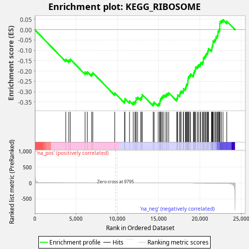
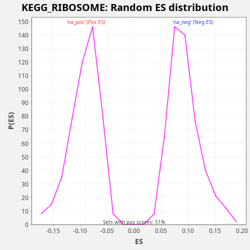

| Dataset | LabCL |
| Phenotype | NoPhenotypeAvailable |
| Upregulated in class | na_neg |
| GeneSet | KEGG_RIBOSOME |
| Enrichment Score (ES) | -0.37047502 |
| Normalized Enrichment Score (NES) | -4.0310345 |
| Nominal p-value | 0.0 |
| FDR q-value | 0.0 |
| FWER p-Value | 0.0 |

| SYMBOL | RANK IN GENE LIST | RANK METRIC SCORE | RUNNING ES | CORE ENRICHMENT | |
|---|---|---|---|---|---|
| 1 | RPLP2 | 3741 | 0.282 | -0.1431 | No |
| 2 | RPL36AL | 4107 | 0.215 | -0.1464 | No |
| 3 | FAU | 4292 | 0.188 | -0.1423 | No |
| 4 | RPS4Y1 | 6083 | 0.050 | -0.2046 | No |
| 5 | MRPL13 | 6350 | 0.041 | -0.2039 | No |
| 6 | RPL26L1 | 6876 | 0.026 | -0.2138 | No |
| 7 | RPL17 | 7017 | 0.022 | -0.2078 | No |
| 8 | RPL26 | 9678 | 0.000 | -0.3062 | No |
| 9 | RPL12 | 10862 | -0.001 | -0.3434 | No |
| 10 | RPS27L | 10914 | -0.001 | -0.3337 | No |
| 11 | RPL28 | 11466 | -0.003 | -0.3448 | No |
| 12 | RPS15A | 11910 | -0.006 | -0.3514 | No |
| 13 | RPL27A | 12117 | -0.007 | -0.3481 | No |
| 14 | RPL35 | 12244 | -0.009 | -0.3416 | No |
| 15 | RPL14 | 12262 | -0.009 | -0.3305 | No |
| 16 | RPL36A | 12450 | -0.011 | -0.3265 | No |
| 17 | RPL21 | 12806 | -0.015 | -0.3294 | No |
| 18 | RPL35A | 12956 | -0.017 | -0.3238 | No |
| 19 | RPL37 | 12995 | -0.017 | -0.3136 | No |
| 20 | RPL39 | 14333 | -0.044 | -0.3572 | No |
| 21 | RPL19 | 14444 | -0.047 | -0.3500 | No |
| 22 | RPS6 | 14940 | -0.063 | -0.3587 | Yes |
| 23 | RPL11 | 15124 | -0.070 | -0.3545 | Yes |
| 24 | RPS10 | 15156 | -0.071 | -0.3440 | Yes |
| 25 | RPL29 | 15206 | -0.073 | -0.3343 | Yes |
| 26 | RPL27 | 15331 | -0.077 | -0.3277 | Yes |
| 27 | RPS11 | 15461 | -0.082 | -0.3212 | Yes |
| 28 | RPS13 | 15628 | -0.088 | -0.3164 | Yes |
| 29 | RPL23A | 15871 | -0.099 | -0.3146 | Yes |
| 30 | RPS27 | 16011 | -0.105 | -0.3086 | Yes |
| 31 | RPL38 | 16213 | -0.116 | -0.3051 | Yes |
| 32 | RPS19 | 17181 | -0.184 | -0.3334 | Yes |
| 33 | RPL30 | 17271 | -0.192 | -0.3253 | Yes |
| 34 | RPL41 | 17304 | -0.195 | -0.3149 | Yes |
| 35 | RPL18 | 17547 | -0.217 | -0.3131 | Yes |
| 36 | RSL24D1 | 17603 | -0.222 | -0.3037 | Yes |
| 37 | RPS9 | 17719 | -0.235 | -0.2966 | Yes |
| 38 | RPL13 | 17978 | -0.264 | -0.2956 | Yes |
| 39 | UBA52 | 18010 | -0.268 | -0.2851 | Yes |
| 40 | RPL15 | 18227 | -0.295 | -0.2823 | Yes |
| 41 | RPL24 | 18301 | -0.305 | -0.2735 | Yes |
| 42 | RPS16 | 18369 | -0.314 | -0.2645 | Yes |
| 43 | RPL7A | 18503 | -0.330 | -0.2583 | Yes |
| 44 | RPL6 | 18528 | -0.334 | -0.2475 | Yes |
| 45 | RPS18 | 18557 | -0.339 | -0.2369 | Yes |
| 46 | RPS29 | 18602 | -0.346 | -0.2269 | Yes |
| 47 | RPL22L1 | 18749 | -0.371 | -0.2212 | Yes |
| 48 | RPLP1 | 18859 | -0.392 | -0.2140 | Yes |
| 49 | RPL36 | 19198 | -0.461 | -0.2162 | Yes |
| 50 | RPS2 | 19248 | -0.471 | -0.2065 | Yes |
| 51 | RPL13A | 19336 | -0.491 | -0.1983 | Yes |
| 52 | RPL22 | 19438 | -0.511 | -0.1907 | Yes |
| 53 | RPL10 | 19464 | -0.517 | -0.1800 | Yes |
| 54 | RPS17 | 19673 | -0.573 | -0.1768 | Yes |
| 55 | RPS28 | 19801 | -0.605 | -0.1703 | Yes |
| 56 | RPS21 | 20007 | -0.666 | -0.1670 | Yes |
| 57 | RPS20 | 20093 | -0.693 | -0.1588 | Yes |
| 58 | RPS15 | 20306 | -0.777 | -0.1558 | Yes |
| 59 | RPL31 | 20405 | -0.816 | -0.1481 | Yes |
| 60 | RPSA | 20407 | -0.816 | -0.1364 | Yes |
| 61 | RPS23 | 20546 | -0.883 | -0.1303 | Yes |
| 62 | RPL23 | 20661 | -0.949 | -0.1233 | Yes |
| 63 | RPL8 | 20759 | -0.997 | -0.1155 | Yes |
| 64 | RPS26 | 20891 | -1.076 | -0.1092 | Yes |
| 65 | RPL4 | 20969 | -1.118 | -0.1006 | Yes |
| 66 | RPS3 | 21032 | -1.156 | -0.0914 | Yes |
| 67 | RPL37A | 21391 | -1.417 | -0.0945 | Yes |
| 68 | RPLP0 | 21459 | -1.484 | -0.0855 | Yes |
| 69 | RPL10A | 21493 | -1.529 | -0.0751 | Yes |
| 70 | RPL7 | 21576 | -1.609 | -0.0667 | Yes |
| 71 | RPS5 | 21587 | -1.617 | -0.0553 | Yes |
| 72 | RPL34 | 21731 | -1.788 | -0.0495 | Yes |
| 73 | RPL32 | 21889 | -2.017 | -0.0442 | Yes |
| 74 | RPS24 | 21941 | -2.096 | -0.0346 | Yes |
| 75 | RPS7 | 22074 | -2.345 | -0.0283 | Yes |
| 76 | RPS4X | 22164 | -2.519 | -0.0202 | Yes |
| 77 | RPL18A | 22179 | -2.550 | -0.0090 | Yes |
| 78 | RPS25 | 22278 | -2.780 | -0.0013 | Yes |
| 79 | RPS3A | 22386 | -3.101 | 0.0060 | Yes |
| 80 | RPL3 | 22397 | -3.134 | 0.0174 | Yes |
| 81 | RPS8 | 22399 | -3.145 | 0.0291 | Yes |
| 82 | RPS12 | 22432 | -3.266 | 0.0395 | Yes |
| 83 | RPS27A | 22596 | -3.844 | 0.0446 | Yes |
| 84 | RPL9 | 22790 | -4.832 | 0.0483 | Yes |
| 85 | RPL5 | 23246 | -8.975 | 0.0413 | Yes |

{kind=link}
{kind=link}